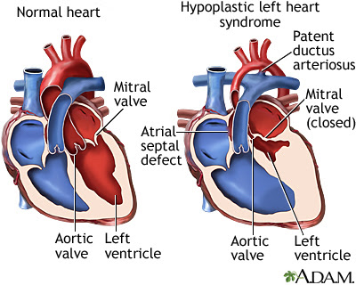

Our Story
Diagnosis and Pregnancy
My Birthing Experience
The Norwood Procedure

Interstage


The Glenn Procedure

 Baby Blu Saves The World
Baby Blu Saves The World 
Tony eats his Fruit Loops with enthusiasm.
Hypoplastic Left Heart Syndrome (HLHS) is a rare heart condition that a child is born with. In this condition, the left ventricle, or pumping chamber, doesn't develop normally and is too small. This means that it cannot pump blood efficiently, if at all. Instead, the right side of the heart must pump blood to the lungs and to the rest of the body.
This image is from: Science Infographics
HLHS is often diagnosed during pregnancy, between 18-24 weeks, when a woman goes for her anatomy scan.
In cases where HLHS is not diagnosed in utero, the symptoms include:
Advances in care have greatly improved the outlook for babies born with HLHS.
Treatment for HLHS may include:
HLHS is most commonly treated with a three step surgical plan that redirects bloodflow to compensate for the hypoplastic ventricle.
This image is from pexels
Sometimes the defect is too severe to be a candidate for surgery. Sometimes parents decline treatments for Religious or Cultural reasons. In these cases, the healthcare team will offer comfort care. Comfort Care is when you sign for no medical interventions. The team will either keep you in hospital, a hospice, or your own home and provide medications to keep your newborn as comfortable as possible. This gives the parents and the family a chance to meet their baby and love them for as long as possible. The life expectancy for an infant without treatment is a few hours to a few days, depending on the severity of the disease. The nurses for comfort care are trained to counsel family members and assist in making keepsakes like photo albums, footprints, and casts of hands or feet.
If you would like more information on Hypoplastic Left Heart Syndrome, you can browse the follow resources: